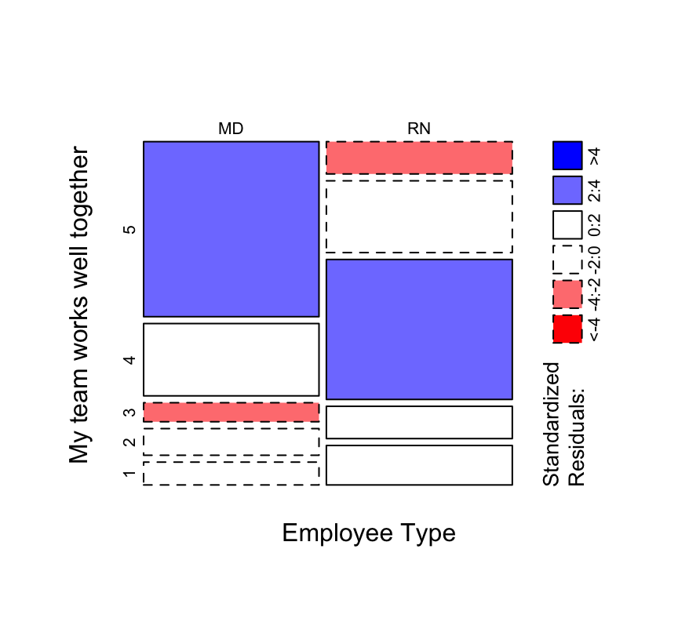

Chapter 6 Is there a significant difference?
Many decision-makers want to know if a result is “significantly different” from, say, the same response from a previous time period, or between a couple of subgroups in the same response, typically asking for identification of questions in which p < 0.05 using a t-test. Unfortunately, this is mostly useless, for two reasons.
First, acting as if Likert or other ordinal scales are continuous level data leads to many problems of interpretation (see the Appendix for a summary table of measurement scales and appropriate statistics). There has been controversy over this distinction for many decades; however, a great way to understand the conceptual problem is to realize that the mean of Agree and Strongly Agree is not Agree-And-A-Half—it just makes no sense.
A subsequent argument might be that, no, it’s not conceptually accurate, but it provides a sense for directional changes. However, such results still run into problems of interpretation: if you go from 4.17 to 4.33, have you gone from Agree.17 to Agree.33? What does such an “improvement” mean, in practical terms? All you can accurately say is that both values are most consistent with an Agree opinion.
Specifically in the medicine/healthcare context, Kuzon et al. state that the use of parametric statistics on ordinal data (such calculating a mean or using a t-test) is the first of “The seven deadly sins of statistical analysis”. Don’t “sin” and you don’t have to worry about whether your results are illegitimate.
There are a few ways around this problem: 1) use medians or other quantiles and test for differences in those statistics (these differences are best assessed via bootstrap or permutation testing), 2) test whether the distribution has shifted (Mann-Whitney-Wilcoxon or \(\chi^2\) tests), or 3) use more advanced techniques such as multinomial or proportional-odds regression (see the Advanced section, below). These options are the more statistically-correct ways to do it (as opposed a t-test).
However, even if you are using the correct tests, the multiple-testing problem remains if you are using traditional/frequentist inference. Make sure you consider the possibility of false-positives in any interpretation of mass-testing results, or use other inferential approaches such as Bayesian or Information-Theoretic instead (the Advanced section, below, uses an AIC-based Information-Theoretic approach for the model results compared against a no-difference model).
6.1 Permutation & Mann-Whitney tests
So, using the simple example from Chapter 1, we might want to know whether the median is statistically different between year 1 (Median = 4) and year 2 (Median = 5). Running a permutation test gives us the following results:
# Subset to years 1 and 2
ex_1_long_y12 = filter(ex_1_long, variable == "year1" | variable == "year2")
# Permutation test
oneway_test(value ~ variable, data = ex_1_long_y12, distribution = "exact")>
> Exact Two-Sample Fisher-Pitman Permutation Test
>
> data: value by variable (year1, year2)
> Z = -0.33333, p-value = 1
> alternative hypothesis: true mu is not equal to 0While our effect size is “1”—more accurately, Agree to Strongly Agree—the p-value of the test is very large (basically 1), so we cannot say that this difference is “statistically significant”.
We could also ask, “has the distribution shifted?”, which would involve using the Mann-Whitney-Wilcoxon test:
wilcox.test(value ~ variable, data = ex_1_long_y12) >
> Wilcoxon rank sum test with continuity correction
>
> data: value by variable
> W = 11.5, p-value = 0.285
> alternative hypothesis: true location shift is not equal to 0The p-value is non-significant, so the difference between year 1 and year 2 can’t be assumed to be a statistically significant change.
Looking at the raw data or graphs seen earlier, a decision-maker might be justified in wanting to act, but the analysis suggests that the difference is not statistically significant.
This leads us to the second problem with using p-values for determining whether a statistically-significant difference has occurred: sample size.
p-values are directly dependent on sample size. If your sample is large enough, you are guaranteed to have a small p-value. If your sample is small, whether or not you get a significant p-value depends on the scale of difference between the groups, i.e., the effect size.
For example, consider the following examples evaluating the number of people who answer Agree or Strongly Agree (the “favorable” score group) to a question:
| Example | Favorable | Total Answers | Effect size | p-value |
|---|---|---|---|---|
| 1 | 15 | 20 | 75% | 0.04 |
| 2 | 114 | 200 | 57% | 0.04 |
| 3 | 1,046 | 2,000 | 52% | 0.04 |
| 4 | 1,001,450 | 2,000,000 | 50% | 0.04 |
With 15 of 20 people selecting a favorable value on the Likert scale, we have an effect size of 75%, which is certainly an effect worth taking seriously. That value is also a statistically significant difference (p < 0.05), which supports the idea that the majority has a favorable opinion. With a couple of thousand responses (example 3), we again have a statistically significant difference, but the effect size is now only 52%, close enough to even-preference as to be practically the same. In medical terms, we might think of this as statistically significant but clinically irrelevant.
6.2 Effect sizes & CIs
For these reasons—and many others outside the scope of these guidelines—statisticians are moving away from the use of p-values. In frequentist statistics, these are being replaced by the use of effect sizes and confidence intervals (CIs); these provide information on both on the precision of the estimated difference, as well as whether the difference can be considered statistically distinct. If the CI includes 0, the difference is not-significant. Regardless of the location of 0, the width of the CI tells you how precise your estimate is.
median_diff = two.boot(year1, year2, median, R=1000)
cat(paste0("Difference in medians is ", abs(median_diff$t0), "."))> Difference in medians is 1.boot.ci(median_diff, type = "perc") > BOOTSTRAP CONFIDENCE INTERVAL CALCULATIONS
> Based on 1000 bootstrap replicates
>
> CALL :
> boot.ci(boot.out = median_diff, type = "perc")
>
> Intervals :
> Level Percentile
> 95% (-1, 1 )
> Calculations and Intervals on Original ScaleHere, we see that the effect size is a difference in medians of 1, but the confidence interval on that effect size goes from -1 to +1, i.e. is consistent with any score difference between Neutral and Strongly Agree. Since that CI includes 0, we can’t say that the change from median of Agree to a median of Strongly Agree is statistically different, though again, sample size matters—one would probably like to try to intervene based on the one respondent who dropped down to 2 (Disagree) anyway.
6.3 \(\chi^2\) test
While Mann-Whitney-Wilcoxon (sometimes known as the Mann-Whitney U-test) is the test most often used with differences between ordinal distributions, there are other options that can tell you whether a measured difference between groups is statistical different.
The old stand-by in this case is the \(\chi^2\) test, which is often best visualized with a mosaic plot (Figure 11).
Mosaic plot between Employee Type and responses to the ‘My team works well together’ question.
# Figure 11
mosaicplot(both2_tab, shade = T, main="", xlab="Employee Type",
ylab="My team works well together")
# Chi-square test
chisq.test(both2_tab)>
> Pearson's Chi-squared test
>
> data: both2_tab
> X-squared = 52.809, df = 4, p-value = 9.344e-116.4 Multinomial regression
The multinomial regression model is a more powerful (and more modern) version of the \(\chi^2\) test. Here, we’re using an AIC-based information-theoretic approach to determine whether the data as we see it is as likely a model as a model that suggests no difference between MD and RN responses. The probabilities can be plotted with a line chart for easy comparison.
Multinomial regression between Employee Type and responses to the ‘My team works well together’ question, with information-theoretic table for multi-model inference.
# Multinomial regression
multnom_both = multinom(Teamwork ~ EmployeeType, data = both3, trace = FALSE)
multnom_both_1 = multinom(Teamwork ~ 1, data = both3, trace = FALSE)
# New data for prediction
df_both = data.frame(EmployeeType = rep(c("MD", "RN"), each = 5),
Teamwork = rep(c(1:5), 2))
# Get probabilities
multnom_both_probs = cbind(df_both, predict(multnom_both,
newdata = df_both, type = "probs", se = TRUE))
# Clean up, ugh
multnom_both_probs = multnom_both_probs[,-2]
multnom_both_probs = unique(multnom_both_probs)
# Make data frame for ggplot, probably should figure out tidyr
multnom_both_probs_df = reshape2::melt(multnom_both_probs,
id.vars = "EmployeeType", variable.name = "Teamwork",
value.name = "probability")
# Figure 12
ggplot(multnom_both_probs_df, aes(x = Teamwork, y = probability,
color = EmployeeType, group = EmployeeType)) +
geom_line() +
geom_point() +
xlab("My team works well together")There appears to be an effect based on Employee Type; the AIC weight for that model is practically 1, making it clearly the best model of the model set.
# AICc table
mod_set = list()
mod_set[[1]] = multnom_both
mod_set[[2]] = multnom_both_1
kable(aictab(mod_set, modnames = c("Employee Type", "Null Model")))| Modnames | K | AICc | Delta_AICc | ModelLik | AICcWt | LL | Cum.Wt |
|---|---|---|---|---|---|---|---|
| Employee Type | 8 | 472.0249 | 0.00000 | 1 | 1 | -227.5680 | 1 |
| Null Model | 4 | 522.0647 | 50.03976 | 0 | 0 | -256.9118 | 1 |
6.5 Proportional-odds regression
If you can meet the assumptions, the proportional-odds regression is more powerful than the multinomial model, as it can take into account the ordered nature of the ordinal scale.
Again, we use the information-theoretic approach to determine whether there is an effect based on Employee Type, again plotted with a line chart for easy comparison. And again the AICc results suggest an effect is present. The probabilities are slightly different from the multinomial model, but may be more accurate since we are now accounting for the ordered nature of the response values.
Proportional odds regression between Employee Type and responses to the ‘My team works well together’ question, with information-theoretic table for multi-model inference.
# Proportional odds regression with polr
polr_both = polr(Teamwork ~ EmployeeType, data = Teamwork_tab_long,
weight = Count)
# New data for prediction, same as multinom
df_both = data.frame(EmployeeType = rep(c("MD", "RN"), each = 5),
Teamwork = rep(c(1:5), 2))
# Get probabilities
polr_both_probs = cbind(df_both, predict(polr_both, newdata = df_both,
type = "probs", se = TRUE))
# Clean up, ugh
polr_both_probs = polr_both_probs[,-2]
polr_both_probs = unique(polr_both_probs)
# Make data frame for ggplot, probably should figure out tidyr
polr_both_probs_df = reshape2::melt(polr_both_probs, id.vars = "EmployeeType",
variable.name = "Teamwork", value.name = "probability")
# Figure 13
ggplot(polr_both_probs_df, aes(x = Teamwork, y = probability,
color = EmployeeType, group = EmployeeType)) +
geom_line() +
geom_point() +
xlab("My team works well together")
# I need to better understand diffs between polr and clm
# because polr objects don't play well with the AICcmodavg package
# Coefs/thresholds are exactly the same, though
fm1 = clm(Teamwork ~ EmployeeType, data=tab_df)
# Null model
fm2 = clm(Teamwork ~ 1, data=tab_df)
# AICc table
mod_set = list()
mod_set[[1]] = fm1
mod_set[[2]] = fm2
kable(aictab(mod_set, modnames = c("Employee Type", "Null Model")))| Modnames | K | AICc | Delta_AICc | ModelLik | AICcWt | LL | Cum.Wt |
|---|---|---|---|---|---|---|---|
| Employee Type | 5 | 485.9008 | 0.00000 | 1 | 1 | -237.7686 | 1 |
| Null Model | 4 | 522.0647 | 36.16387 | 0 | 0 | -256.9118 | 1 |
We can test the assumption of proportional odds with the anova function. There’s no evidence of a difference, suggesting that the assumption is met.
fm3 = clm(Teamwork ~ EmployeeType, data=tab_df, threshold="equidistant")
anova(fm1, fm3)> Likelihood ratio tests of cumulative link models:
>
> formula: link: threshold:
> fm3 Teamwork ~ EmployeeType logit equidistant
> fm1 Teamwork ~ EmployeeType logit flexible
>
> no.par AIC logLik LR.stat df Pr(>Chisq)
> fm3 3 485.94 -239.97
> fm1 5 485.54 -237.77 4.407 2 0.1104If the concepts or ideas in this section are confusing, it’s probably worth consulting a statistician for help evaluating your data with these tools.